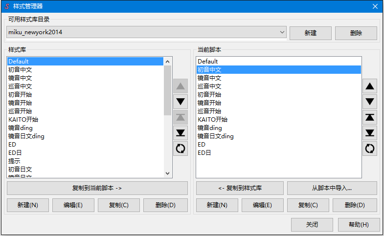
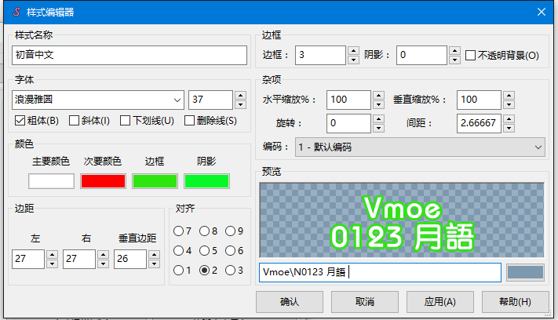

样式 在ASS格式中是指一套固定的字幕排版方案。样式可以在单独的行里被
特效标签覆写;由于样式的存在，你不必再单独为每一行进行排版。
样式管理器
Aegisub的样式管理器工具 (字幕菜单下可找到) 提供了多种多样的方式以便组织保存和编辑字幕样式，它看起来是这个样子:

如你所见, 窗口被分为两半。右半窗口显示的是目前脚本所有可用的样式;左半窗口显示的是样式库中的样式。样式库的存在是为了方便您从其他字幕文件中快速导入样式到当前字幕文件中。 你想建立多少个样式库就可以建多少个（译者注：目前版已知bug，样式库名称不能含有中文）; 一些人喜欢把他们使用的样式都存在一个样式库中,其他人喜欢按照字体、外观或者首字母顺序存储样式库。 通过顶部的下拉菜单可以切换样式库，样式库内容显示在左半窗口。
在底部有两排几乎一样的按钮;一排用于样式库，一排用于当前脚本。它们是:
- 新建
- 新建样式,在样式库或当前脚本中皆可.
- 编辑
- 在样式编辑器(见下方)编辑已选择的样式。
- 复制
- 建立已选样式的副本，同时会打开样式编辑器窗口.
- 删除
- 删除已选的样式(可多选).
- 复制到当前脚本和复制到样式库
- 在当前脚本和样式库之间复制已选的样式。
- 从脚本中导入
- 从其它脚本中导入样式到当前脚本。
在样式管理器中按 Ctrl-C 会复制已选的样式(可多选)到剪切板（文本形式）。你可以在另一个脚本的样式管理器按 Ctrl-V (粘贴)，此举会导入你刚才复制的样式到当前脚本。
样式编辑器
按"编辑"按钮或双击一个样式的名称，会打开样式编辑器窗口,在这里你可以调整所有可调节的参数. 注意: 一些参数是以特效标签的形式存在的 (如 \be) ，它们 并不是 样式参数;反过来, 一些样式编辑器中的参数也 没有 相应的特效标签相对应 (如"不透明背景"边框选项)。这是一个不幸且偶然的缺陷。
接着说样式编辑器:

- 样式名称
- 样式的名称. 在一栏中两个样式的名称不能重复.
- 字体
- 这部分控制着字体。下拉菜单允许你选择系统中所有已经安装的字体，右边的数字用于控制字的大小(字号)。下方的复选框可以调节加粗/斜体/下划线/删除线参数。
- 颜色
- 这个区域控制着四种文本颜色(主要颜色、次要颜色、边框颜色和阴影颜色).
四种颜色的含义为:
- 主要颜色
- 主要的 "填充" 颜色，应用在字的主体部分。
- 次要颜色
- 次要填充颜色，应用于卡拉OK字幕中 (详见
\k 相关内容 特效标签).
- 边框颜色
- 字幕文本边框的颜色。
- 阴影颜色
- 字幕阴影的颜色，阴影一般显示在文本的右下方，也可通过特效标签调整。
四个颜色框显示的是当前对应的四种文本颜色;单击它们会打开颜色选择器.
- 边距
- 调整该样式下字幕的定位方式 (当字幕内容过长不能保证边距时会自动换行，无法提供文本对齐的选项)。每个值(左、右、垂直)都在脚本分辨率的基础上进行计算(详见脚本配置). 有关对齐如何影响垂直边距：
(
\an) 1-3，文本定位时的纵坐标是从脚本的纵向分辨率上减去垂直边距;
(\an) 4-6，设置垂直边距没有意义;
(\an) 7-9，文本定位时的纵坐标是0+垂直边距。
- 对齐
- 控制文本在视频上的对齐方式。功能和
\an 标签功能相同。对齐 1、4 和 7是左对齐; 3、6和9是右对齐; 2、5和8是居中. 1、2和3是"底部字幕(Subtitle=Sub Titles)" (最常见的字幕); 4、5和6是"中部字幕(=Midtitles=Mid Titles)" ; 7、8和9是"顶部字幕(=Toptitles=Top Titles)"。注意，并没有文本内部的文字对齐方式，这是受格式限制的。
- 边框
- 控制边框厚度和阴影偏移量。
- 边框方面，如果你在 脚本配置)开启了“比例缩放边框和阴影”，数值代表着边框的相对厚度；如果未开启，则实际效果会取决于渲染器(建议开启)。
如果不需要边框，设置数值为0即可。
- 阴影其实是主要文字的副本，默认显示在主文本右下方一段距离，如果“比例缩放边框和阴影”开启，则按照脚本分辨率计算，否则是按照视频计算。
如果不需要阴影，设置数值为0即可。
- 最后，如果在复选框中选中“不透明背景”，则会使边框以方框形式显示 (默认情况下边框保持着字形)。如果杂项中的缩放比例不是100%，方框也会随之变化。
- 杂项
- 这部分选项有一些调节参数，它们是:
- 缩放 水平/垂直
- 分别调节文本的水平(X)垂直(Y)缩放值。按百分比计算，所以100%为默认情况。它并不是调节文本大小的正常方式(会产生不必要的变形); 直接调节字号，使用字体原带的信息才是科学的做法。
- 旋转
- 控制字幕按Z轴(虚拟的垂直屏幕平面的轴)旋转的值。以角度计算。
(译者注：水平值为0，逆时针数值变大)
不涉及以\t标签控制的静态效果时，0、360、720之类的值效果是相同的，涉及动态效果时的说明见动画变换。
- 间距
- 控制字符间的水平间距. 0是默认情况。想减小间距用负值(译者注：这既是一个样式编辑器参数又是一个特效标签参数，在样式编辑器中不支持设置为负值，可用\fsp-特效标签实现减小间距)，想增加间距，设置为正值。
这个数值代表着两个字符之间附加的空像素数;具体是按照脚本像素还是视频像素计算的并没有明确说明(在VSFilter中)。
- 编码
- 这个问题很难讲清楚，很难做到无误的翻译，而且绝大多数情况这个选项不用调整，故下面只附上英文原文。
Controls which codepage is used to map codepoints to glyphs; it has
nothing to do with the actual text encoding of the script. This is only
meaningful on Windows using VSFilter, where it is used to get some old
(particularly Japanese) fonts without proper Unicode mappings to render
properly. On other systems and renderers, Freetype2 provides the proper
mappings. If you didn't understand a word of the above, pretend this
setting doesn't exist, as it is rarely important.(如果读完英文也无法理解，就假装它不存在吧)
- 预览
- 显示当前样式设置下文本看起来是什么样子的。文本框区域可以输入一些文字用来观看效果，点击颜色可以设置背景颜色。